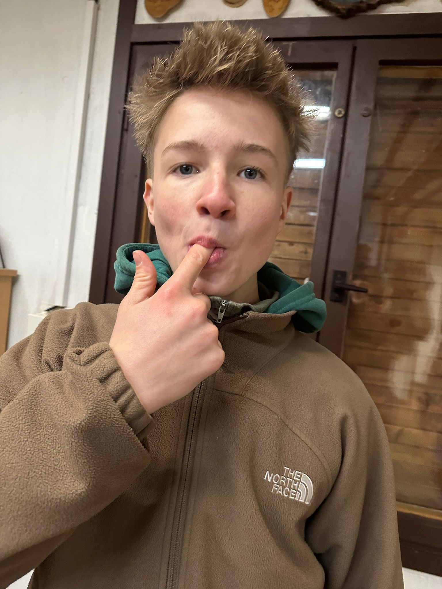

Jsem šestnáctiletý kluk, který má rád běhání. Běh mi pomáhá udržovat se v kondici a cítit se dobře fyzicky i psychicky. Rád běhám venku, nejlépe v přírodě nebo v klidných částech města. Běhání pro mě není jen sport, ale také způsob, jak si vyčistit hlavu od stresu. Snažím se zlepšovat svou vytrvalost a překonávat vlastní limity. Do budoucna bych se chtěl v běhání dál rozvíjet a dosahovat lepších výsledků.
© 2025 Štěpán Škarban